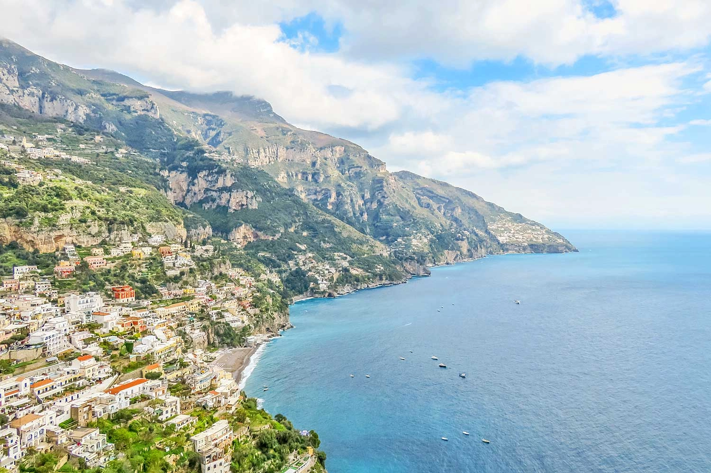

A Costa Amalfitana (ou Costa Amalfi, como vulgarmente é chamada) é uma linha litoral com uma extensão de cerca de 50km localizada em Itália, na região da Campânia, e relativamente perto de Nápoles. Em termos estritos, começa em Positano e termina em Vietri sul Mar, ou vice-versa. Esta sucessão de cidades e aldeias, como enormes varandas viradas para o mar, apresentam um beleza geográfica e diversidade natural ímpar e está classificada como Património Mundial da UNESCO.
Costa Amalafitana